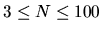

| Triple Ties: The Organizer's Nightmare |
N participants compete in a chess tournament, every player competing against each other one single time. The results are registered in a square matrix in the following way:
To establish the final clasification the organizer must face the problem of possible ties. The general criterion is that ties should be solved by counting the points obtained in the matches between the tied players, but sometimes this does not solve the problem. This happens for two players if they reached a draw in their respective match; for three tied players, there exist two different undecidable situations:
Since the organizer wishes to establish different classifications according to age groups, nationality, etc. of the participants, it has been decided to elaborate a table containing all the triple ties. If all three matches end in draws, the three numbers must be annotated in increasing order, and if there is a cycle of victories, in the following order: the first in the line beats the second, and the second beats the third one. Among the three possibilities of expressing this fact, the line must be written in increasing or decreasing order. These three-number chains must themselves be listed in lexicographical order.
Unlimited number of tests. Each test consists in a line with a positive integer N representing the number of players and N lines containing the results matrix of the tournament with consecutive digits separated by a blank space ( ).
For every input a line containing the total amount M of undecidable triple ties; and, if M>0, M lines, each of them with the three numbers of the involved players separated by a blank space and satisfying the order requirements, both within the line and in the set of lines.
3 0 0 1 1 0 0 0 1 0 3 0 1 0 0 0 0 0 0 0 3 0 0 0 0 0 0 0 0 0
1 3 2 1 0 1 1 2 3